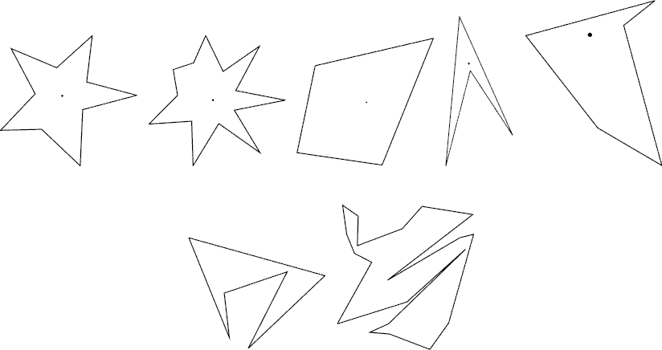

Home Page
F.A.Qs
Statistical Charts
Past Contests
Scheduled Contests
Award Contest
| Online Judge | Problem Set | Authors | Online Contests | User | ||||||
|---|---|---|---|---|---|---|---|---|---|---|
| Web Board Home Page F.A.Qs Statistical Charts | Current Contest Past Contests Scheduled Contests Award Contest | |||||||||
|
Language: How I Mathematician Wonder What You Are!
Description After counting so many stars in the sky in his childhood, Isaac, now an astronomer and a mathematician uses a big astronomical telescope and lets his image processing program count stars. The hardest part of the program is to judge if shining object in the sky is really a star. As a mathematician, the only way he knows is to apply a mathematical definition of stars. The mathematical definition of a star shape is as follows: A planar shape F is star-shaped if and only if there is a point C ∈ F such that, for any point P ∈ F, the line segment CP is contained in F. Such a point C is called a center of F. To get accustomed to the definition let’s see some examples below.  The first two are what you would normally call stars. According to the above definition, however, all shapes in the first row are star-shaped. The two in the second row are not. For each star shape, a center is indicated with a dot. Note that a star shape in general has infinitely many centers. Fore Example, for the third quadrangular shape, all points in it are centers. Your job is to write a program that tells whether a given polygonal shape is star-shaped or not. Input The input is a sequence of datasets followed by a line containing a single zero. Each dataset specifies a polygon, and is formatted as follows.
The first line is the number of vertices, n, which satisfies 4 ≤ n ≤ 50. Subsequent n lines are the x- and y-coordinates of the n vertices. They are integers and satisfy 0 ≤ xi ≤ 10000 and 0 ≤ yi ≤ 10000 (i = 1, …, n). Line segments (xi, yi)–(xi + 1, yi + 1) (i = 1, …, n − 1) and the line segment (xn, yn)–(x1, y1) form the border of the polygon in the counterclockwise order. That is, these line segments see the inside of the polygon in the left of their directions. You may assume that the polygon is simple, that is, its border never crosses or touches itself. You may assume assume that no three edges of the polygon meet at a single point even when they are infinitely extended. Output For each dataset, output “ Sample Input 6 66 13 96 61 76 98 13 94 4 0 45 68 8 27 21 55 14 93 12 56 95 15 48 38 46 51 65 64 31 0 Sample Output 1 0 Source | ||||||||||||||||
[Submit] [Go Back] [Status] [Discuss]
All Rights Reserved 2003-2013 Ying Fuchen,Xu Pengcheng,Xie Di
Any problem, Please Contact Administrator